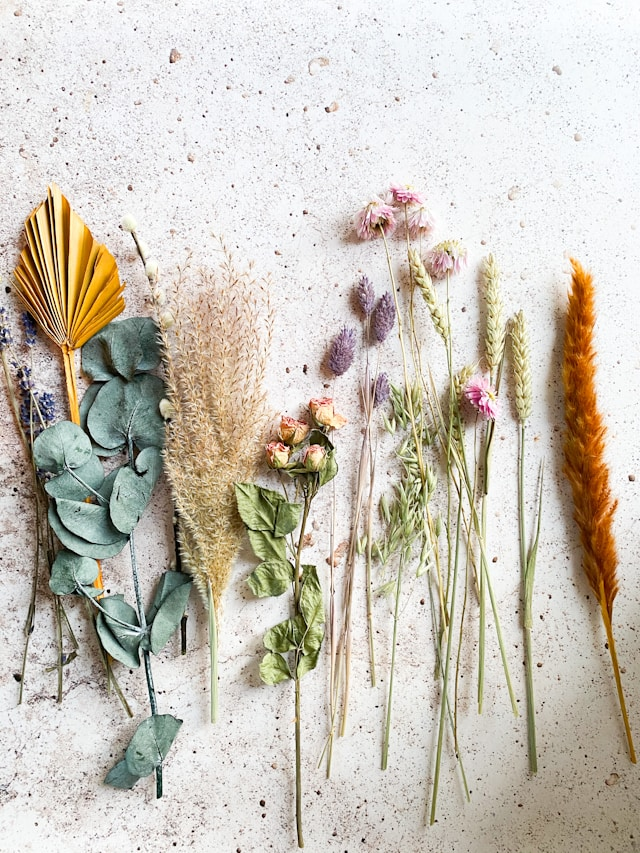

Explore Our Bespoke Apothecary Creations
Handmade Soaps & Salves
Our handmade soaps and herbal salves are created with care, using essential oils, shea butter, and nourishing botanicals. Each batch is made in small quantities to ensure quality and freshness. Our salves are designed to soothe dry skin, while our soaps provide gentle cleansing for all skin types. Choose from a variety of seasonal scents that capture the essence of nature and relaxation.
Elixirs, Lotions & Herbal Blends
For those seeking deeper wellness, our apothecary also offers herbal elixirs and aromatic lotions formulated with organic ingredients. Whether you are looking to uplift your mood or calm your mind, our blends are crafted to support your holistic journey. Visit us in-store to sample our teas, tinctures, and essential oil blends or order custom products that fit your unique wellness needs.
